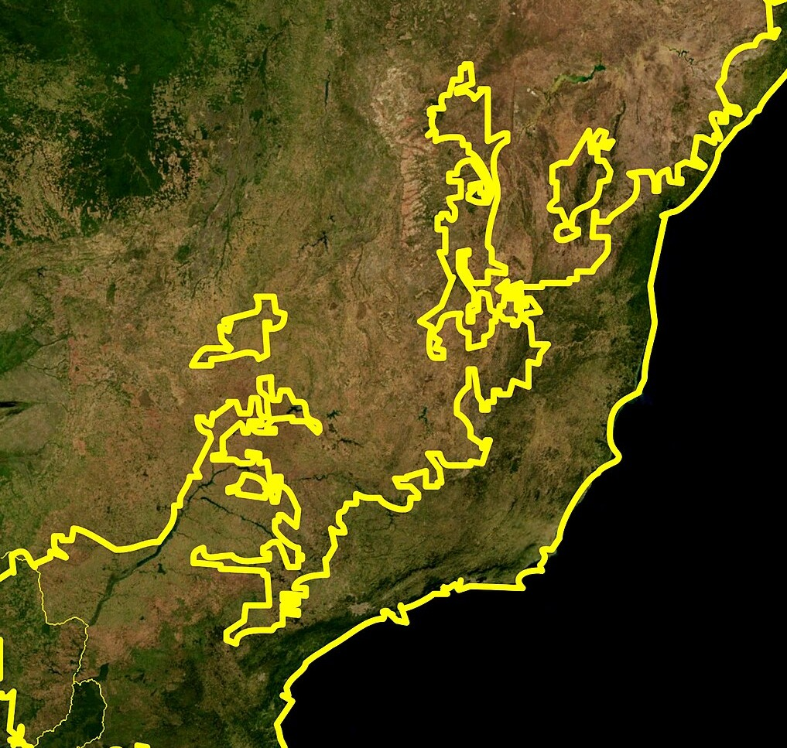
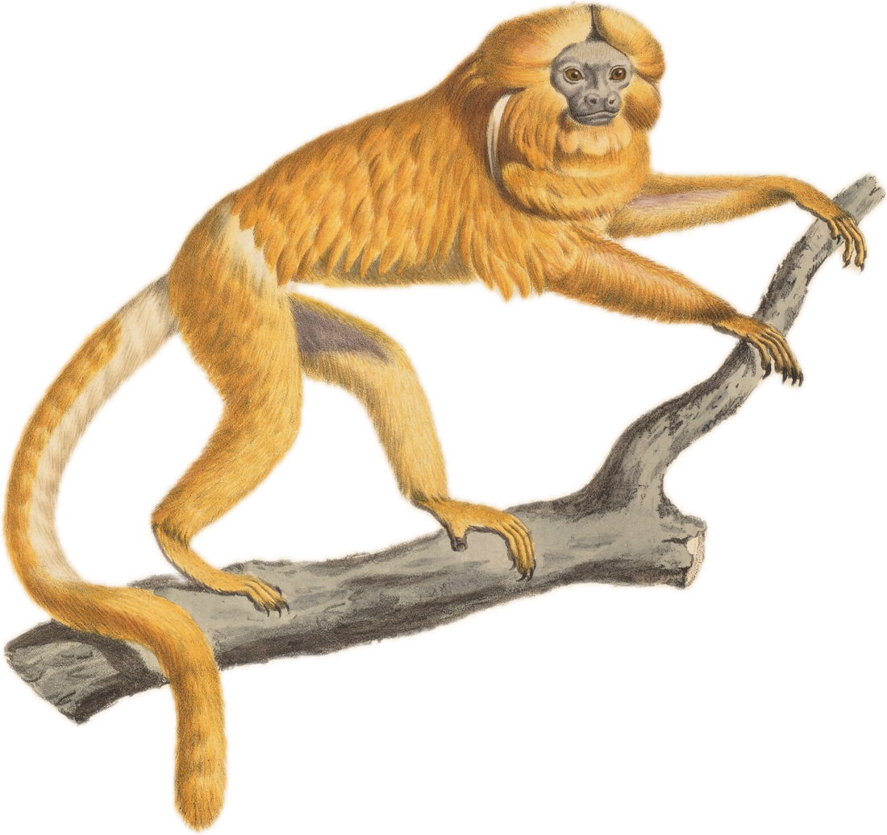

área original da Mata Atlântica

gravura, séc. XIX
MACACOS DO BRASIL · Nº 1
Mico-leão-
dourado
só no Brasil
só existe na Mata
Atlântica do RJ
Imagens via Wikimedia Commons: Daderot (CC0) · PedroJoséCarvalho (CC BY 4.0) · NASA · Iconographia Zoologica, Univ. de Amsterdã (domínio público)